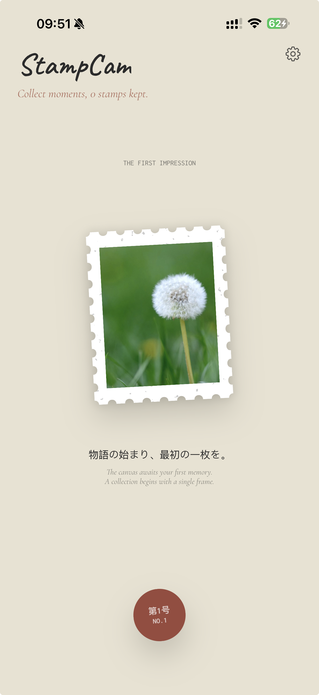

01
Capture through custom punch tools
Shape each moment with curated punch styles and borders, from classic cuts to more expressive silhouettes.
Collectible camera for remembered moments
StampCam captures everyday scenes, shapes them through distinctive punch tools, and archives them as tactile keepsakes. Photograph, collect, revisit, and share.
Available now on the App Store.

01
Shape each moment with curated punch styles and borders, from classic cuts to more expressive silhouettes.
02
Organize your stamps in a living archive, revisit details, and move between the stamp and the original scene.
03
Export poetic postcard-style compositions built from the finished stamp and share them as polished image artifacts.
Why StampCam
StampCam is designed for people who want to keep more than a photo roll. It treats each captured frame like a collectible object: shaped, framed, archived, and remembered.
About Rethinking Studio
Rethinking Studio is an independent team drawn to quiet interfaces, slower rituals, and tools that leave room for memory. We make products that do not rush to explain everything at once. Instead, we prefer texture, pause, and a little tenderness in the way technology meets ordinary life.
StampCam grows from that belief. We wanted a camera that feels less like endless capture and more like keeping a keepsake. Our work lives somewhere between software, stationery, and the poetry of paying attention.
“We are interested in software that remembers the human hand.”